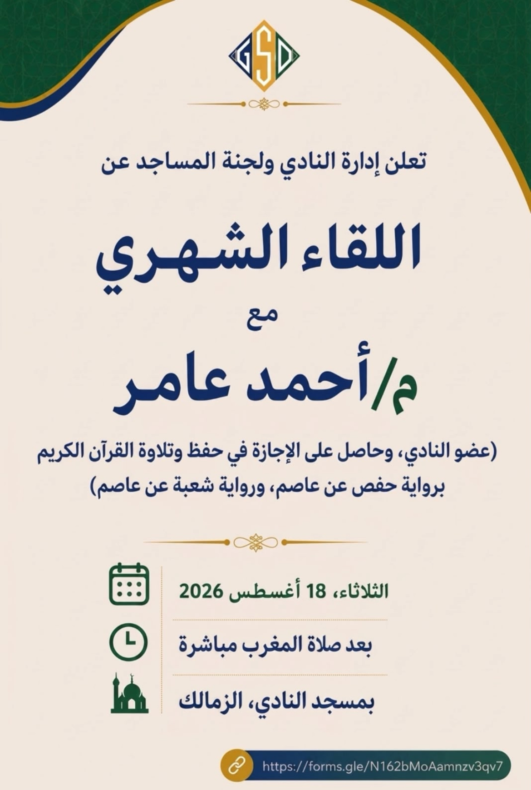
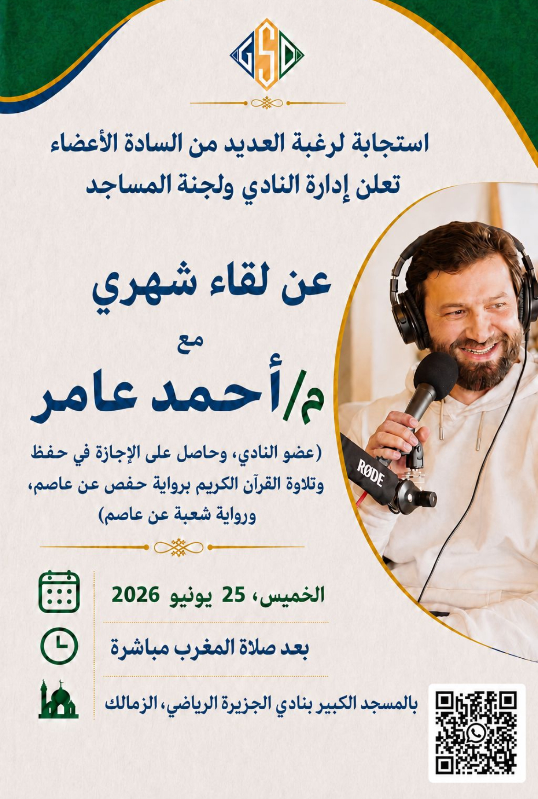
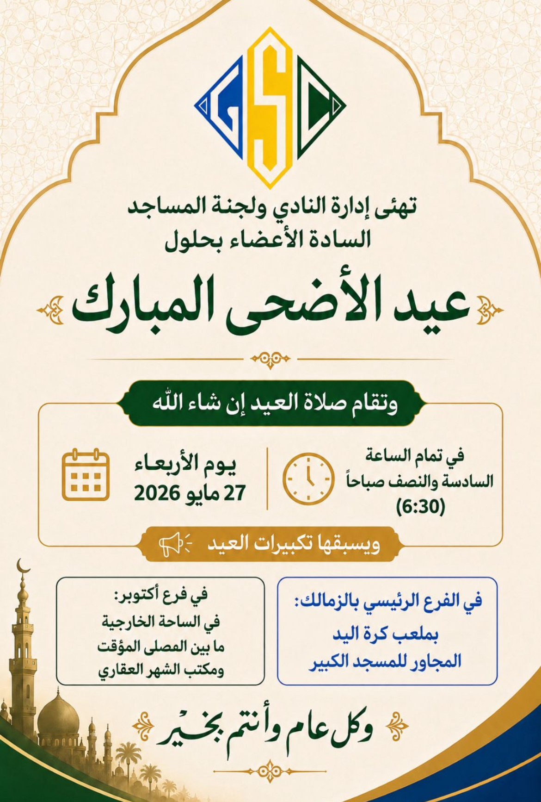
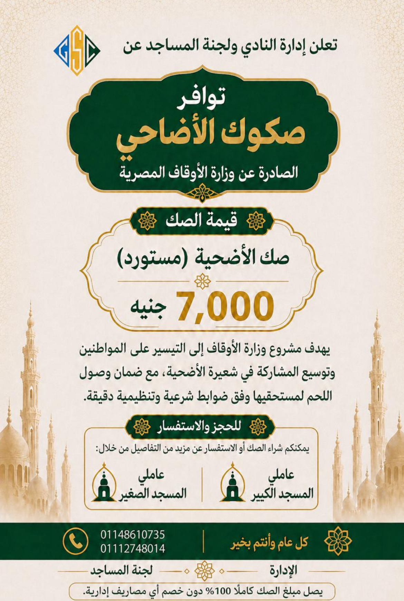

لوحة المقارنة — مِرسام
على اليمين البوستر الأصلي، وعلى اليسار إعادة بنائه داخل التطبيق من قالب جاهز دون أي تعديل يدوي على الشيفرة.
Left = rebuilt live in the app from a template. Right = the original reference poster. Every piece of information on each original has a home in the rebuild.
لماذا تبدو إعادة البناء مختلفة؟ الكحلي صار لون الحبر بدل أن يكون لوناً ثالثاً، والذهبي صار خطاً شعرياً بدل المعدن اللامع،
والزخارف كلها مرسومة هندسياً بدل الزخارف الجاهزة، وكل خلفية تنشر «حدود أمان» تلتزم بها العناصر — فتتفق الهوامش الأربعة.
١ — اللقاء الشهري · قالب «لقاء / محاضرة» · خلفية wave · لوحة gsc · تخطيط classic
مِرسام — إعادة البناءlecture · wave · gsc
الأصليIMG_6349

٢ — لقاء شهري بصورة المتحدث · قالب «لقاء بصورة» · تخطيط side-photo
مِرسام — إعادة البناءspeaker · wave · gsc
الأصليIMG_6350

٣ — تهنئة عيد الأضحى · قالب «تهنئة عيد» · خلفية arch · لوحة emerald · تخطيط greeting
مِرسام — إعادة البناءeid · arch · emerald
الأصليIMG_6351

٤ — صكوك الأضاحي · قالب «إعلان صكوك» · خلفية banner · تخطيط offer
مِرسام — إعادة البناءvoucher · banner · gsc
الأصليIMG_6352

معالجتان بديلتان للبوستر الأول — من الطبقة الثانية من الخلفيات
نفس المحتوى تماماً، لكن باتجاهين لم يسبق للجنة استخدامهما. لا شيء هنا يحتاج مصمماً — كلاهما ضغطتان في التطبيق.
بديل أ — حقل داكنinverted · bone
بديل ب — شبكة خطوطrule-grid · charcoal
عيّنة من نطاق الخلفيات — نفس المحتوى، ست معالجات